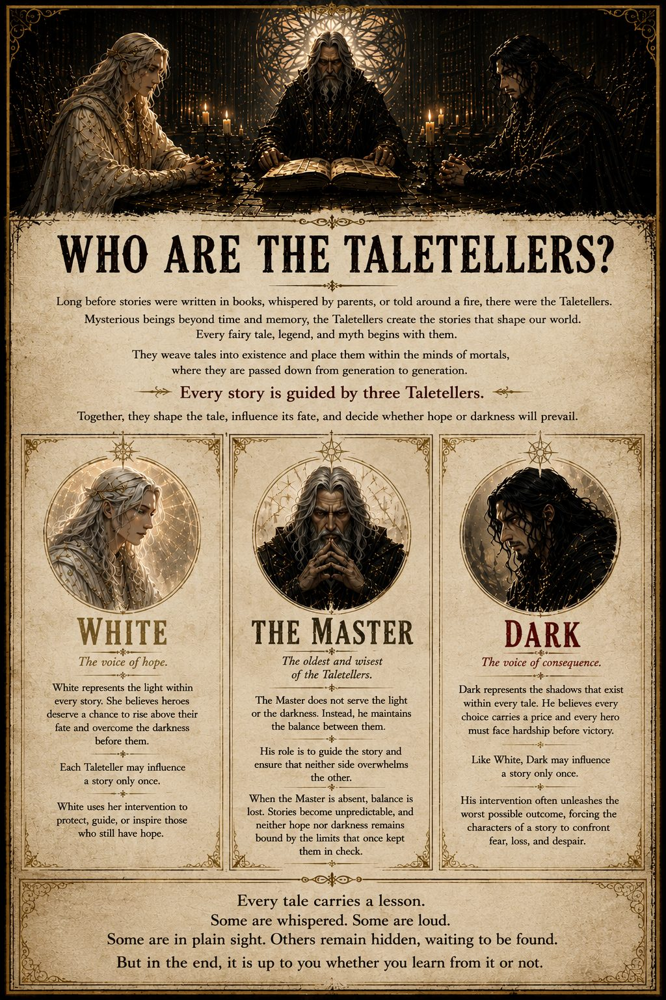
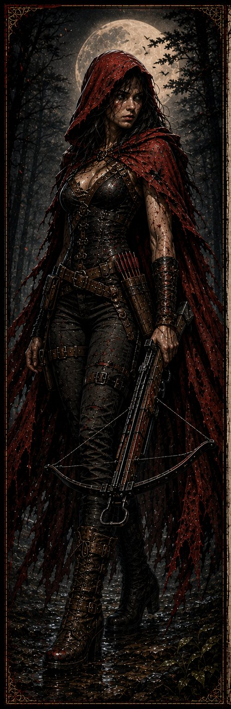
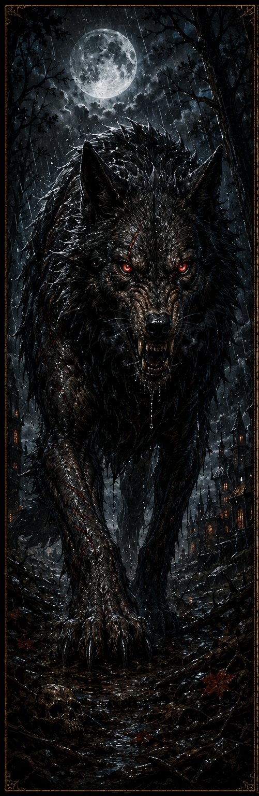

Dark Tales is an original AltWorld Comics series built around familiar stories that refuse to stay familiar. Fairy tales, myths, and old lessons are reopened, expanded, and connected through a darker shared mythology.
The Taletellers
Long before the stories themselves are told, the Taletellers stand behind them. White speaks for hope. Dark speaks for consequence. The Master exists to keep either force from overwhelming the other.
This site version keeps their rules broad and spoiler-free. The comic itself reveals how their interventions shape individual stories.

Concept page introducing the three Taletellers.
Characters

Little Red Riding Hood
Red
A survivor who grew into a hunter. Red knows the Deep Woods better than most and has built her life around confronting the things that prey on the innocent.
Known for: discipline, ranged weapons, and refusing to remain a victim.

The Deep Woods
The Big Bad Wolf
A legendary predator whose name became larger than the creature itself. In Dark Tales, the Wolf represents the kind of fear that outlives a single encounter.
Known for: overwhelming strength, relentless pursuit, and becoming part of Red's legend.
Issue Guide
Dark Tales #1: Little Red Riding Hood
The first original Dark Tales release introduces Red, the Taletellers, and the larger mythology that will connect future retellings.